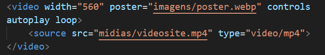

☀ Para inserir um vídeo hospedado em seu próprio servidor, utilize a tag video junto a tag source src. É aconselhável você ter o mesmo vídeo salvo em diferentes formatos tipo MP4, M4V, WEBM e OGV para evitar incompatibilidade com os navegadores. Coloque os vídeos em ordem do mais leve ao mais pesado.
☀ Você pode adicionar uma capa ao seu vídeo, implementando o poster, observe a imagem abaixo:

♥ EXEMPLO DE VÍDEO LOCAL ♥
☀ É importante ressaltar que vídeos hospedados localmente podem não ser a melhor das opções para seu site, visto que o custo se torna elevado.
♥ INSERINDO VÍDEOS DO YOUTUBE ♥
☀ Existem diversas plataformas que disponibilizam o serviço de hospedagem de vídeos, como exemplo, o YouTube.
☀ Para utilizar vídeos do YouTube, você precisará abrir o vídeo desejado, clicar em "Compartilhar", "Incorporar" e "Copiar". Em seguida, cole-o em seu código HTML5.